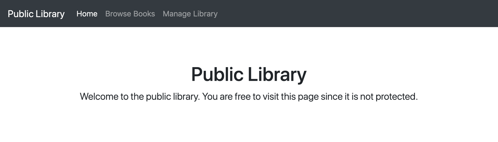
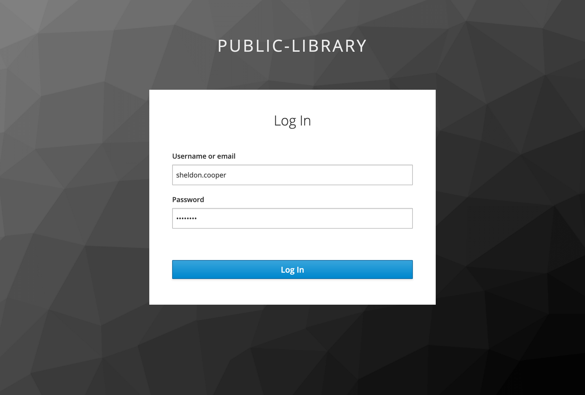
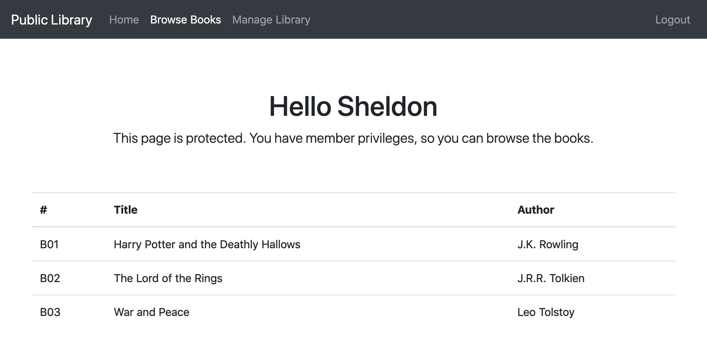
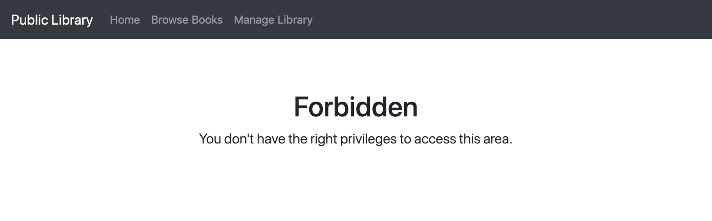
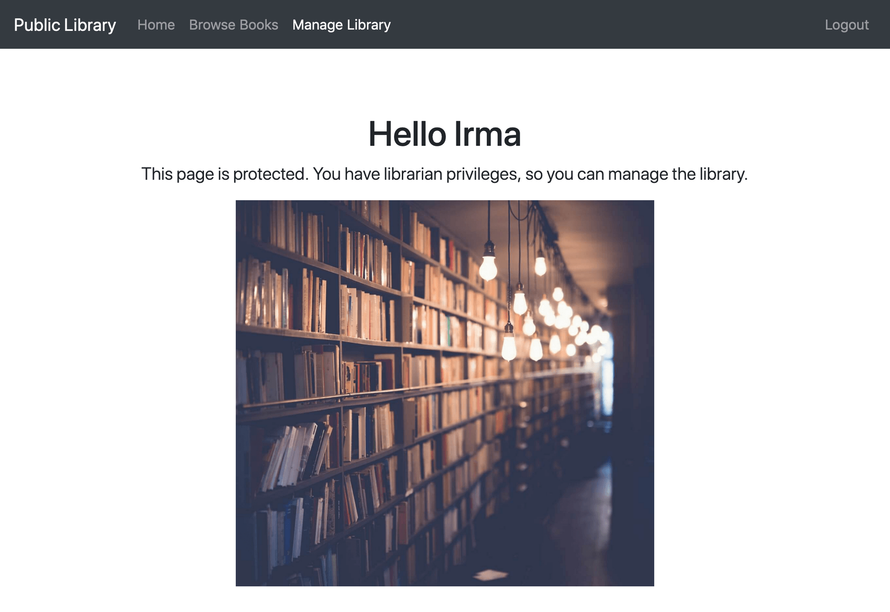

Spring Security Keycloak Spring Boot
Spring Security Keycloak Spring Boot
In previous articles, we have explored some cool Keycloak features and used them to secure a Spring Boot application. In this tutorial, we will bring Spring Security in and see how to integrate it with Keycloak seamlessly.
We're going to:
- Set up a Spring Boot application;
- Integrate Spring Boot with Keycloak;
- Configure Spring Security to use Keycloak as an authentication provider;
- Implement the application logic;
- Add access policies based on user roles to protect our application endpoints.
1. Prerequisites
To follow along with this tutorial, you will need:
- JDK 8 or JDK 11+
- an IDE
- Gradle 5.5.0+
- Spring Boot 2.1.0+
- Keycloak 7.0.0+
If you prefer to use Apache Maven rather than Gradle, feel free to do so.
You will need a Keycloak server installed and configured. If you are just getting started and want to know more about it, refer to my previous articles in this series to learn how to install Keycloak, how to do some basic configuration for authentication and authorization, and how to set up a client for our application.
Throughout this tutorial, I will use a Keycloak server configured in the same way as explained in the mentioned articles.
Should you be interested in having a look at how to secure a Spring Boot application with Keycloak, without using Spring Security, I wrote an article about that, too. But it's not a prerequisite to follow along with this one.
On GitHub, you can find the source code for the application we are building in this tutorial.
Let's get started!
2. The Demo Application
The application we're going to build is for a fictitious public library. There are two groups of users:
- members can browse the books available in the library;
- librarians can also manage the books.
For each group of users, we have a corresponding user role defined in Keycloak.
Also, we have two users registered in the system: Sheldon is a member, Irma is both a member and a librarian.
| Name | Username | Roles |
|---|---|---|
| Sheldon Cooper | sheldon.cooper | Member |
| Irma Pince | irma.pince | Member, Librarian |
3. Set Up A Spring Boot Application
Our application will make use of three main libraries to set Spring up:
spring-boot-starter-web, a starter for building web applications with Spring MVC;spring-boot-starter-thymeleaf, a starter to use Thymleaf views for Spring MVC;spring-boot-starter-security, a starter for using Spring Security.
The integration with Keycloak is made possible by the so-called client adapters.
Keycloak client adapters are libraries that make it very easy to secure applications and services with Keycloak.
For this project, we will need:
- the Spring Boot Adapter to take advantage of its auto-configuration features for Spring Boot;
- the Spring Security Adapter to use Keycloak as an authentication provider for Spring Security.
The keycloak-spring-boot-starter library includes both of them, so we don't need anything else other than that.
We can define all those dependencies in the gradle.build file for our project (or pom.xml if using Maven).
buildscript {
ext {
springBootVersion = '2.1.9.RELEASE'
}
repositories {
mavenCentral()
}
dependencies {
classpath("org.springframework.boot:spring-boot-gradle-plugin:${springBootVersion}")
}
}
apply plugin: 'java'
apply plugin: 'org.springframework.boot'
apply plugin: 'io.spring.dependency-management'
group = 'com.thomasvitale'
version = '0.0.1-SNAPSHOT'
sourceCompatibility = '1.8'
repositories {
mavenCentral()
}
ext {
set('keycloakVersion', '7.0.1')
}
dependencies {
implementation 'org.springframework.boot:spring-boot-starter-web'
implementation 'org.springframework.boot:spring-boot-starter-thymeleaf'
implementation 'org.springframework.boot:spring-boot-starter-security'
implementation 'org.keycloak:keycloak-spring-boot-starter'
testImplementation 'org.springframework.boot:spring-boot-starter-test'
testImplementation 'org.springframework.boot:spring-security-test'
testImplementation 'org.keycloak:keycloak-test-helper'
}
dependencyManagement {
imports {
mavenBom "org.keycloak.bom:keycloak-adapter-bom:${keycloakVersion}"
}
}
build.gradle
That's it. We have set up a Spring Boot application, ready to leverage Spring Security and Keycloak.
4. Configure Keycloak In Spring Boot
We should now provide some configuration for the integration between Spring Boot and Keycloak.
4.1. Basic Keycloak Configuration
The default configuration file for Keycloak is keycloak.json, but thanks to the Keycloak Spring Boot Adapter we can use the native application.properties file (or application.yml).
keycloak.realm=public-library
keycloak.resource=spring-boot-app
keycloak.auth-server-url=http://localhost:8180/auth
keycloak.ssl-required=external
keycloak.public-client=true
keycloak.principal-attribute=preferred_username
application.properties
Let's look at the properties one by one:
keycloak.realm: the name of the realm, required;keycloak.resource: the client-id of the application, required;keycloak.auth-server-url: the base URL of the Keycloak server, required;keycloak.ssl-required: establishes if communications with the Keycloak server must happen over HTTPS. Here, it's set toexternal, meaning that it's only needed for external requests (default value). In production, instead, we should set it to all. Optional;keycloak.public-client: prevents the application from sending credentials to the Keycloak server (false is the default value). We want to set it to true whenever we use public clients instead of confidential. Optional;keycloak.principal-attribute: the attribute with which to populate theUserPrincipalname. Optional.
4.2. Use The Keycloak Configuration Defined In application.properties
Starting from Keycloak Spring Boot Adapter 7.0.0, due to some issues, the automatic discovery of the Keycloak configuration from the application.properties (or application.yml) file will not work. To overcome this problem, we need to define a KeycloakSpringBootConfigResolver bean explicitly in a @Configuration class.
@Configuration
public class KeycloakConfig {
@Bean
public KeycloakSpringBootConfigResolver keycloakConfigResolver() {
return new KeycloakSpringBootConfigResolver();
}
}
KeycloakConfig.java
Without this bean, we would get an error.
***************************
APPLICATION FAILED TO START
***************************
Description:
Parameter 1 of method setKeycloakSpringBootProperties in org.keycloak.adapters.springboot.KeycloakBaseSpringBootConfiguration required a bean of type 'org.keycloak.adapters.springboot.KeycloakSpringBootConfigResolver' that could not be found.
Action:
Consider defining a bean of type 'org.keycloak.adapters.springboot.KeycloakSpringBootConfigResolver' in your configuration.
Process finished with exit code 1
Error thrown when no KeycloakSpringBootConfigResolver bean has been defined.
This problem doesn't affect the Keycloak Spring Boot Adapter versions older than 7.0.0.
5. Implement The Application Logic
We want to use Spring Security and Keycloak to make sure that the users of our application are authenticated and authorized, before accessing some protected endpoints.
5.1. The Controller
Let's define three endpoints in a Spring MVC Controller class:
/indexwill be freely accessible;/bookswill be accessible only by users with a Member role: they can browse the books available at the library;/managerwill be accessible only by users with a Librarian role: they can manage the books.
Later on, we will configure the last two endpoints to require the users to both be authenticated and have the proper role. It's also helpful adding a /logout endpoint for logging out conveniently.
@Controller
public class LibraryController {
private final HttpServletRequest request;
private final BookRepository bookRepository;
@Autowired
public LibraryController(HttpServletRequest request, BookRepository bookRepository) {
this.request = request;
this.bookRepository = bookRepository;
}
@GetMapping(value = "/")
public String getHome() {
return "index";
}
@GetMapping(value = "/books")
public String getBooks(Model model) {
configCommonAttributes(model);
model.addAttribute("books", bookRepository.readAll());
return "books";
}
@GetMapping(value = "/manager")
public String getManager(Model model) {
configCommonAttributes(model);
model.addAttribute("books", bookRepository.readAll());
return "manager";
}
@GetMapping(value = "/logout")
public String logout() throws ServletException {
request.logout();
return "redirect:/";
}
private void configCommonAttributes(Model model) {
model.addAttribute("name", getKeycloakSecurityContext().getIdToken().getGivenName());
}
private KeycloakSecurityContext getKeycloakSecurityContext() {
return (KeycloakSecurityContext) request.getAttribute(KeycloakSecurityContext.class.getName());
}
}
LibraryController.java
In the last method, we use the KeycloakSecurityContext to retrieve the IdToken, from which we can get the first name of the authenticated user.
As a template engine, we're using Thymeleaf. We have a template for each resource as well as a unique template to handle unauthorized requests. You can check out the full source code of this demo project on GitHub to see how the templates look like.
5.2. The Repository
The LibraryController class delegates the fetching of Book entities to a BookRepository class. The repository is implemented hard-coded in memory, for the sake of the example.
@Repository
public class BookRepository {
private static Map<String, Book> books = new ConcurrentHashMap<>();
static {
books.put("B01", new Book("B01", "Harry Potter and the Deathly Hallows", "J.K. Rowling"));
books.put("B02", new Book("B02", "The Lord of the Rings", "J.R.R. Tolkien"));
books.put("B03", new Book("B03", "War and Peace", "Leo Tolstoy"));
}
public List<Book> readAll() {
List<Book> allBooks = new ArrayList<>(books.values());
allBooks.sort(Comparator.comparing(Book::getId));
return allBooks;
}
}
BookRepository.java
5.3. The Entity
The Book class is a POJO.
public class Book {
private String id;
private String title;
private String author;
public Book(String id, String title, String author) {
this.id = id;
this.title = title;
this.author = author;
}
}
Book.java
6. Configure Spring Security With Keycloak
If we tried to run the application at this point, we would notice that we could navigate through all the pages without any restriction. Let's change that.
We want to configure Spring Security to:
- delegate the user authentication phase to Keycloak, following the OAuth 2.0/OpenID Connect Authorization Code Flow;
- leverage the
IdTokenandAccessTokenobjects returned by Keycloak to define some access policies for our application endpoints.
6.1 Create a Security Configuration Class
Let's proceed step by step, starting with the creation of a SecurityConfig class.
@KeycloakConfiguration
public class SecurityConfig extends KeycloakWebSecurityConfigurerAdapter {
}
The SecurityConfig class should extend KeycloakWebSecurityConfigurerAdapter and be annotated with @KeycloakConfiguration. This annotation provides a Keycloak-based Spring Security configuration.
It is a stereotype to wrap the two annotations required by a Spring Security configuration class: @Configuration and @EnableWebSecurity. It also packs a third annotation required by Keycloak to scan correctly the beans configured in the Keycloak Spring Security Adapter: @ComponentScan(basePackageClasses = KeycloakSecurityComponents.class).
6.2 Register Keycloak as the Authentication Provider
Keycloak is our identity provider (IdP), so let's register it with the Spring Security authentication manager.
@Autowired
public void configureGlobal(AuthenticationManagerBuilder auth) {
SimpleAuthorityMapper grantedAuthorityMapper = new SimpleAuthorityMapper();
grantedAuthorityMapper.setPrefix("ROLE_");
KeycloakAuthenticationProvider keycloakAuthenticationProvider = keycloakAuthenticationProvider();
keycloakAuthenticationProvider.setGrantedAuthoritiesMapper(grantedAuthorityMapper);
auth.authenticationProvider(keycloakAuthenticationProvider);
}
Here, we are registering KeycloakAuthenticationProvider with the authentication manager. In this way, Keycloak will be responsible for providing authentication services.
Spring Security has a convention to handle security roles in a format like ROLE_ADMIN (where ADMIN is the actual security role name). I don't like this convention. In Keycloak, I prefer defining capitalized, lowercase role names.
To solve the mismatch between the way we defined the user roles and the conventions used by Spring Security, we can specify a different configuration. So, we are setting a SimpleAuthorityMapper for the KeycloakAuthenticationProvider to prefix all the roles registered in Keycloak with the ROLE_ prefix. That will help Spring Security handling those roles in the best way.
In Keycloak, we have defined two roles: Member and Librarian. In Spring Security, after the mapping, they will become ROLE_Member and ROLE_Librarian.
We could even make the full role name uppercase by calling the method grantedAuthorityMapper.setConvertToUpperCase(true);, but for this demo application we are not doing that.
6.3 Define a Session Authentication Strategy
The application that we are building, in Keycloak terms, is a public application with user interaction. In this scenario, the recommended session authentication strategy is RegisterSessionAuthenticationStrategy, which registers a user session after successful authentication.
@Bean
@Override
protected SessionAuthenticationStrategy sessionAuthenticationStrategy() {
return new RegisterSessionAuthenticationStrategy(new SessionRegistryImpl());
}
When securing a service-to-service application, instead, we would use a NullAuthenticatedSessionStrategy.
6.4. Define Role-Based Access Security Policies
So far, we have done all the necessary configuration to make Spring Security work seamlessly with Keycloak. Our final step is about defining some security constraints for the application endpoints.
@Override
protected void configure(HttpSecurity http) throws Exception {
super.configure(http);
http
.authorizeRequests()
.antMatchers("/books").hasAnyRole("Member", "Librarian")
.antMatchers("/manager").hasRole("Librarian")
.anyRequest().permitAll();
}
The access policies for our application endpoints are:
/books-> user must be authenticated and with at least one of the roles Member and Librarian./manager-> user must be authenticated and with the role Librarian.- any other endpoint will be freely accessible, no role constraint, no authentication required.
6.5 Handle Bean Definition Overriding Issues
Since Spring 2.1.0, the spring.main.allow-bean-definition-overriding property is set to false by default, differently from the previous versions of Spring. It means that it's not allowed anymore to override a bean already defined.
The SecurityConfig class we are working on extends KeycloakWebSecurityConfigurerAdapter, which defines an HttpSessionManager bean. But this bean has already been defined somewhere else in the Keycloak Adapter library. Therefore, it triggers an error in Spring 2.1.0+.
***************************
APPLICATION FAILED TO START
***************************
Description:
The bean 'httpSessionManager', defined in class path resource [com/thomasvitale/keycloak/config/SecurityConfig.class], could not be registered. A bean with that name has already been defined in URL [.../org/keycloak/adapters/springsecurity/management/HttpSessionManager.class] and overriding is disabled.
Action:
Consider renaming one of the beans or enabling overriding by setting spring.main.allow-bean-definition-overriding=true
Process finished with exit code 1
Error thrown when multiple beans of the same type have been defined.
We could fix the problem by changing the value for spring.main.allow-bean-definition-overriding to true. I prefer adjusting the bean definition to be loaded conditionally only if no other bean of that type has been defined.
@Bean
@Override
@ConditionalOnMissingBean(HttpSessionManager.class)
protected HttpSessionManager httpSessionManager() {
return new HttpSessionManager();
}
6.7 The Final Spring Security Configuration with Keycloak
We have completed the security configuration. Here it is the final result.
@KeycloakConfiguration
public class SecurityConfig extends KeycloakWebSecurityConfigurerAdapter {
@Autowired
public void configureGlobal(AuthenticationManagerBuilder auth) {
SimpleAuthorityMapper grantedAuthorityMapper = new SimpleAuthorityMapper();
grantedAuthorityMapper.setPrefix("ROLE_");
KeycloakAuthenticationProvider keycloakAuthenticationProvider = keycloakAuthenticationProvider();
keycloakAuthenticationProvider.setGrantedAuthoritiesMapper(grantedAuthorityMapper);
auth.authenticationProvider(keycloakAuthenticationProvider);
}
@Bean
@Override
protected SessionAuthenticationStrategy sessionAuthenticationStrategy() {
return new RegisterSessionAuthenticationStrategy(new SessionRegistryImpl());
}
@Bean
@Override
@ConditionalOnMissingBean(HttpSessionManager.class)
protected HttpSessionManager httpSessionManager() {
return new HttpSessionManager();
}
@Override
protected void configure(HttpSecurity http) throws Exception {
super.configure(http);
http
.authorizeRequests()
.antMatchers("/books").hasAnyRole("Member", "Librarian")
.antMatchers("/manager").hasRole("Librarian")
.anyRequest().permitAll();
}
}
SecurityConfig.java
7. Testing The Application
It's time to verify if our code will work as intended. As you may have noticed, when setting up our build.gradle, we have defined a few dependencies for testing:
spring-boot-starter-test, a starter for testing Spring Boot applications with JUnit, Hamcrest and Mockito;spring-security-test, which provides utilities to test Spring Security;keycloak-test-helper, which helps testing applications using Keycloak.
Writing autotests for Spring applications secured by Keycloak will be the topic of a future article, so we're not going to use those libraries now. But here you have them, in case you're interested in diving into the topic.
Instead, let's run our application and manually check if it's working correctly.
8. Using The Application
Let's make sure our Keycloak server is up and running, and start our Spring application. By default, it will be available on http://localhost:8080.

Home page - Public
The home page is freely accessible. We are not required to be authenticated nor to have a specific role.
When we navigate to the other pages, the application redirects us to Keycloak for logging in.

Login page provided by Keycloak
After providing the right username and password, Keycloak redirects us back to our application. Depending on our role, we can visit the other pages as well.
If we log in as a Member, like Sheldon Cooper, then we are allowed to see the Browse Books page.

Browse Books - Protected (Member)
Even if we are authenticated, we don't have the rights to navigate to the Manage Library page. If we try to do so, then we are told that we are not allowed in.

If we log in as a Librarian, like Irma Pince, then we can also see the Manage Library page.

Manage Library - Protected (Librarian)
Finally, let's notice the Logout link in the top-right corner, which we can use to log out.
The application is working correctly, and all the security constraints have been enforced.
Well done!
Conclusion
In this tutorial, we have built a Spring Boot application and secured it with Spring Security and Keycloak.
We have configured the integration with Keycloak leveraging the Spring Boot Adapter. Then, we have used the Spring Security Adapter to set Keycloak as the authentication provider for our application and protected some endpoints by defining access control policies based on user roles.
If you are interested in Keycloak, have a look at my articles about this identity and access management solution.
Are you thinking about using Keycloak for your next project? Have you already been using it? I'd like to hear your stories about Keycloak, leave a comment or let me know on Twitter!
Last update: 15/11/2019
Keycloak Series
- Introducing Keycloak for Identity and Access Management
- Keycloak Basic Configuration for Authentication and Authorization
- Keycloak Authentication Flows, SSO Protocols and Client Configuration
Keycloak with Spring Series
- Securing a Spring Boot Application with Keycloak - A First Look
- Spring Security and Keycloak to Secure a Spring Boot Application - A First Look